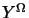

The problem of image interpretation would essentially involve the
low-level vision task of image segmentation to produce regions in the given
image corresponding to some objects in the scene and then giving some
labels or interpretation to the segmented regions based on some a priori
knowledge. Table 5.1, shows the task of
image interpretation in the framework of modular
integration[114]. In
general, one is given an image which is a projection of a 3D scene onto
the 2D plane and some knowledge about the 3D environment. From the 2D
image we need to segment the image and interpret the regions based on the
segmented image. This is shown in Figure 5.1, except for the
fact that the portions corresponding to wavelet transform and refine using difference image do not come into existence.
Given the image  which is a projection of a 3D scene onto the 2D plane at the finest resolution, defined over the 2D lattice of size
, and some knowledge about the 3D environment. The problem of interpretation involves
We now formulate the problem of image interpretation by synergistically integrating both the segmentation segmentation module and the interpretation module interpretation modules in a multiresolution framework. We term this procedure of interleaving segmentation and interpretation procedures as joint segmentation and interpretation joint segmentation and integration scheme. The idea of integrating these two operations is two fold (i) both segmentation and interpretation modules by themselves do not work efficiently because a good segmented image helps the interpretation module perform better and to get a good segmentation, knowledge of the scene, or in other words the interpretation of the scene is essential, and (ii) we end up getting as a byproduct a better segmented image in addition to a correctly interpreted image. The idea of formulating this problem in a multiresolution framework is to speed up computation as discussed in Section 3 of Chapter 5.
We construct the wavelet transform of the image [94] which results in = , the low pass filter low pass filtered image and , , the difference image, each of size . Figure 5.2 shows the wavelet transformed structure of , where ( ) corresponds to the difference image obtained when is filtered by a high pass filter along the rows (columns) and by a low pass filter along the columns (rows). The low pass filtered image is segmented using any segmentation algorithm, segmentation algorithm. In this chapter for the purpose of simulations we have used the k-means clustering algorithm (see Appendix F) to produce a crude segmented image. The segmented image is refined using the difference image ( , , ) as described in Section 3.
The segmented image is subjected to interpretation. The problem of image interpretation is formulated in a MRF framework along the lines described in Section 1.1 of Chapter 3.2.1 (similar to the formulation of Modestino and Zhang [58]) except that we have a provision for a no-interpretation label label, no-interpretation . The reason for having no-interpretation label, as a possible label, is to refine the segmented image before further interpretation can be carried out. The process of, interpretation, merging of the no-interpretation labels to produce a better segmented image and again interpretation, is carried out until none of the regions have label no-interpretation (see Figure 5.1). The resulting segmented image is assumed to be the final segmented image and final interpretation is carried out on it.
At each resolution (say  ) let the segmented image (Figure
3.1) be
represented as an undirected simple planar graph. The nodes
representing the regions of the segmented image at
resolution
) let the segmented image (Figure
3.1) be
represented as an undirected simple planar graph. The nodes
representing the regions of the segmented image at
resolution  .
Let the interpretation be a
random variable associated with the region ,
,
and takes a value from the label set
,
where , , ,
.
Let the interpretation be a
random variable associated with the region ,
,
and takes a value from the label set
,
where , , , ,
are the possible labels.
,
are the possible labels.
Let
be the
feature measurements made on the segmented image
and
be the domain knowledge at resolution  .
If we assume that the
conditional probability of , given and
is a Markov random field (MRF) MRF, namely,
.
If we assume that the
conditional probability of , given and
is a Markov random field (MRF) MRF, namely,
| (36) |